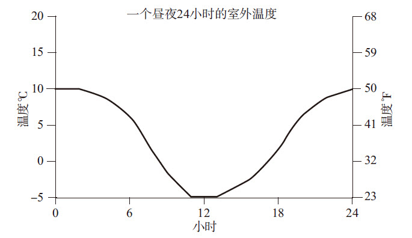
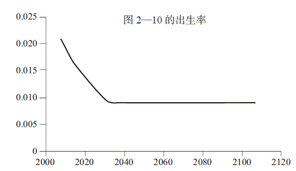
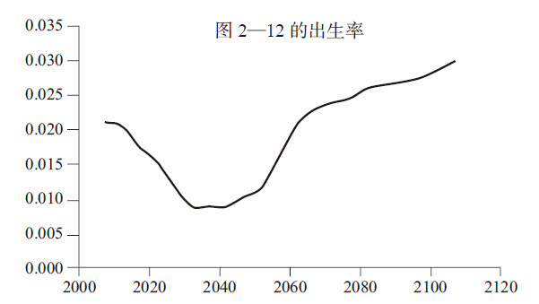
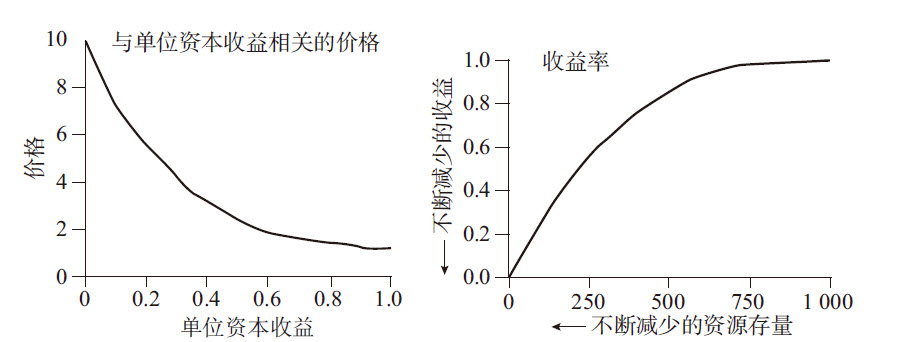
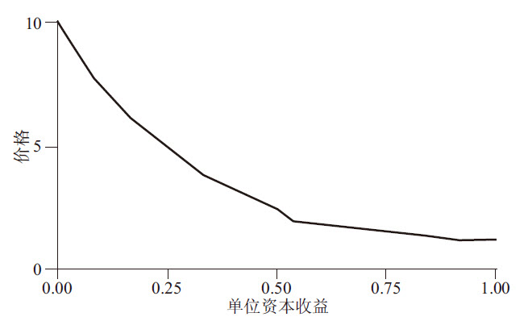
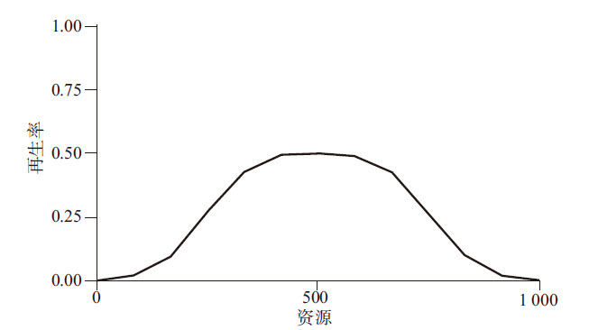
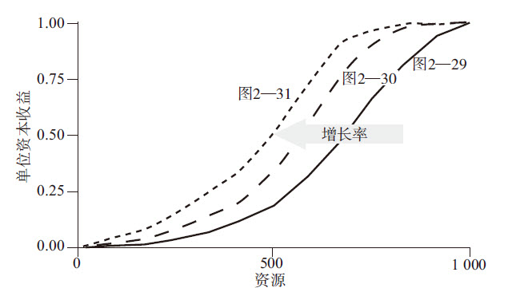

即使不用计算机，我们也一样能从系统中学到很多东西。但是，哪怕是一个非常简单的模型，一旦你开始探索，就会惊喜地发现自己是多么希望更深入地学习，并创建出自己正式的系统数学模型。
本书中的模型都是用STELLA建模软件创建的，该软件由isee systems（原名为High Performance Systems）公司出品。我在下面给出的公式可以很容易地写入各种建模软件中，例如Vensim软件（Ventana Systems Inc.出品）、Stella和iThink软件（isee systems Inc.出品）等。
下列这些公式是用于第1章和第2章中讨论的那9个动态模型的。“转化器”（Converters）可以是常数，或是基于系统模型中的其他要素得出的计算结果。（t）是时间的缩写，（dt）代表时间间隔，即从本次计算到下一次计算之间的时间长度。
浴缸——图1—5、图1—6、图1—7
存量：
浴缸中的水量（t）=浴缸中的水量（t-dt）+（流入量-流出量）×dt
初始存量值：浴缸中的水量=50加仑
t=分钟数
dt=1分钟
运行时长=10分钟
流入：流入量=时间从0～5分钟，流入速度是0加仑/分钟；时间从6～10分钟，流入速度是5加仑/分钟
流出：流出量=（流出速度是）5加仑/分钟
咖啡杯的冷热实验——图1—10、图1—11
●冷却
存量：咖啡的温度（t）=咖啡的温度（t-dt）-（冷却×dt）
初始存量值：
咖啡的温度=100℃，80℃，60℃……分别对应三个对比模型
t=分钟数
dt=1分钟
运行时长=8分钟
流出：冷却=差距×10%
转化器：差距=咖啡的温度-室内温度
室温=18℃
●加热
存量：咖啡的温度（t）=咖啡的温度（t-dt）+（加热×dt）
初始存量值：咖啡的温度=0℃，5℃，10℃……分别对应三个对比模型
t=分钟
dt=1分钟
运行时长=8分钟
流入：加热=差距×10%
转化器：差距=室内温度-咖啡的温度
室内温度=18℃
银行账户——图1—12、图1—13
●存量：
银行账户余额（t）=银行账户余额（t-dt）+（利息收入×dt）
初始存量值：银行账户余额=$100
t=年
dt=1年
运行时长=12年
流入：利息收入（$/年）=银行账户余额×利率
转化器：利率=2%，4%，6%，8%，10%……分别对应五个对比模型
温度调节器——图2—1至图2—6
存量：
室内温度（t）=室内温度（t-dt）+（加热-散热）×dt
初始存量值：室内温度=10℃——冷房间制热；18℃——热房间制冷
t=小时
dt=1小时
运行时长=8小时和24小时
流入：加热=5或实际室温与设定的温度之差的最小值。
流出：散热=室内外温差×10%……对应“正常的”房子；室内外温差×30%……对应“保温效果不好的”房子。
转化器：温度设置=18℃
实际室温与设定的温度之差=0或（温度设置-室内温度）之差的最大值。
室内外温差=室内温度-10℃……对应持续测量的室外温度（图2—2至图2—4）；室内温度-24小时的室外温度……对应于一天一夜（图2—5至图2—6）。
24小时的室外温度变化，从白天10℃（50°F）到夜间-5℃（23°F），
如图A—1所示：
图A—1
人口——图2—7至图2—12
存量：人口（t）=人口（t-dt）+（出生人数-死亡人数）×dt
初始存量值：人口=66亿
t=年
dt=1年
运行时长=100年
流入：出生人数=人口×出生率
流出：死亡人数=人口×死亡率
转化器：
图2—8：
死亡率=0.009……或每1000人中死亡9人
出生率=0.021……或每1000人中生育21人
图2—9：
死亡率=0.030
出生率=0.021
图2—10：
死亡率=0.009
出生率从0.021经过一段时间后下降到0.009，如图A—2所示：
图A—2
图2—12：
死亡率=0.009
出生率从0.021经过一段时间下降至0.009，又上升至0.030，如图A—3所示：
图A—3
资本——图2—13和图2—14
存量：资本存量（t）=资本存量（t-dt）+（投资额-折旧）×dt
初始存量值：资本存量=100
t=年
dt=1年
运行时长=50年
流入：投资额=年产量×投资系数
流出：折旧=资本存量/资本生命周期
转化器：年产量=资本存量×单位资本的产出
资本生命周期=10年，15年，20年……分别对应三个对比模型
投资系数=20%
单位资本的产出=1/3
库存——图2—15至图2—22
存量：汽车库存量（t）=汽车库存量（t-dt）+（交付-销售）×dt
初始存量值：汽车库存量=200辆
t=天
dt=1天
运行时长=100天
流入：交付=20……时间0至5；给工厂的订单（t-交货延迟）……时间6至100）
流出：销售=汽车库存量或客户需求的最小值
转化器：客户需求=每天20辆汽车……时间0至25；每天22辆汽车……时间26至100
预期的销售量=感知延迟下的平均销量
期望的库存量=预期的销售量×10
差异=期望的库存量-汽车库存量
给工厂的订单=最大值（预期的销售量+差异）或0……图2—18；
=最大值（预期的销售量+差异/反应延迟）或0……
图2—20至图2—22
图2—16，延迟：
感知延迟=0
反应延迟=0
交货延迟=0
图2—18，延迟：
感知延迟=5天
反应延迟=3天
交货延迟=5天
图2—20，延迟：
感知延迟=2天
反应延迟=3天
交货延迟=5天
图2—21，延迟：
感知延迟=5天
反应延迟=2天
交货延迟=5天
图2—22，延迟：
感知延迟=5天
反应延迟=6天
交货延迟=5天
受到不可再生性资源限制的资本存量——图2—23和图2—27
存量：资源（t）=资源（t-dt）-（开采量×dt）
初始存量值：资源=1000……图2—24、图2—26、图2—27；1000，2000，4000……对应图2—25的三个对比模型
流出：开采量=资本×单位资本收益
t=年
dt=1年
运行时长=100年
存量：资本(t)=资本（t-dt）+（投资额-折旧）×dt
初始存量值：资本=5
流入：投资额=利润或增长目标的最小值
流出：折旧=资本/资本生命周期
转化器：资本生命周期=20年
利润=（价格×开采量）-（资本×10%）
增长目标=资本×10%……图2—16至图2—26；资本×6%，8%，10%，12%……对应于图2—26的四个对比模型
价格=3……图2—24，图2—25，图2—26；图2—27，价格从1.2开始，此时单位资本收益很高；随着单位资本收益下降，价格上升到10，如图A—4所示：
图A—4
单位资本收益从1开始，此时资源存量很高，随着资源存量的下滑，单位资本收益变为0，如图A—5所示。
图A—5
受到可再生性资源限制的资本存量——图2—28至图2—31
存量：资源（t）=资源（t-dt）+（再生量-捕捞量）×dt
初始存量值：资源=1000
流入：再生量=资源×再生率
流出：捕捞量=资本×单位资本收益
t=年
dt=1年
运行时长=100年
存量：资本（t）=资本（t-dt）+（投资额-折旧）×dt
初始存量值：资本=5
流入：投资额=利润或增长目标的最小值
流出：折旧=资本/资本生命周期
转化器：资本生命周期=20年
增长目标=资本×10%
利润=（价格×捕捞量）-资本
价格从1.2开始，此时单位资本收益很高，随着单位资本收益下降，价格上升到10。与前面的模型一样，价格和收益之间也是一种非线性的关系（如图A—6所示）。
图A—6
再生率在资源储备很充足或彻底耗尽时是0。在资源变化范围的中间段，再生率达到最高点0.5左右（如图A—7所示）。
图A—7
单位资本收益从1开始，此时资源储备充足，但随着资源存量的减少，单位资本收益下降（非线性）。单位资本收益的增长从总体上看，图2—29增长率最低，图2—30增长率稍微高些，图2—31增长率最高。